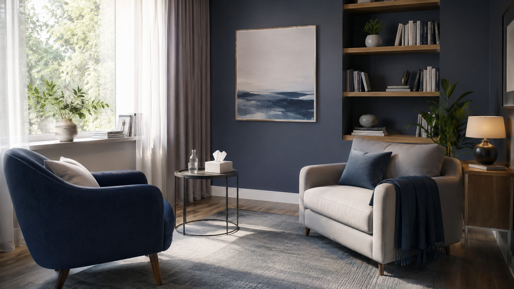

Registro e formação
Atendimento conduzido com responsabilidade profissional, escuta clínica e compromisso ético.
Um espaço de escuta para pessoas que estão cansadas de viver no automático, tentando sustentar tudo sozinhas.
Psicólogo, pós-graduado em psicoterapia clínica, com graduação em Administração de empresas e pós-graduado em gestão de pessoas.
Atendimento conduzido com responsabilidade profissional, escuta clínica e compromisso ético.
Essa abordagem enfatiza a importância das dinâmicas inconscientes, dos processos de transferência e contratransferência presentes em pensamentos, comportamentos e padrões na sua vida. Busca identificar influências do passado e conflitos não resolvidos para promover melhor qualidade de vida.
Tudo o que acontece na terapia é tratado com cuidado, sigilo e respeito pela sua história.
Para pessoas que sentem que alguma coisa dentro delas pede atenção, mas nem sempre conseguem colocar isso em palavras. A proposta une escuta acolhedora e conhecimento estratégico para auxiliar no equilíbrio emocional, autoconhecimento e qualidade de vida.
Pensamentos acelerados, preocupação constante, dificuldade de descansar e sensação de estar sempre em alerta.
Relações que machucam, dificuldade de impor limites, medo de perder pessoas ou sensação de estar sempre se anulando.
Sensação de nunca ser suficiente, excesso de cobrança e dificuldade de reconhecer o próprio valor.
Perdas, términos, despedidas e mudanças que ainda continuam doendo mesmo depois de algum tempo.
Cansaço emocional, sensação de esgotamento e dificuldade de continuar sustentando tudo do mesmo jeito.
Um espaço para se perceber melhor, entender padrões e construir uma relação mais saudável consigo mesmo.

As sessões acontecem de forma online, com privacidade e acolhimento no seu próprio ambiente.
Exclusivamente onlineDuração média de 50 a 60 minutos, com orientações simples para você se organizar com tranquilidade.
Link enviado após confirmaçãoVocê entra em contato pelo WhatsApp da forma que conseguir. Sem precisar preparar um texto perfeito.
Conversamos sobre horários, funcionamento, modalidade e o que fizer sentido para o seu momento atual.
A primeira sessão é um espaço para entender melhor o que você está vivendo e como isso tem afetado sua vida.
Ao longo do processo, vamos trabalhando juntos aquilo que hoje parece difícil sustentar sozinho.
A terapia respeita o seu tempo, sua história e aquilo que faz sentido para você construir nesse processo.
Reconheça os sinais que pedem atenção.
Abra espaço para olhar sua história com mais clareza.
A psicoterapia pode ajudar a nomear o que hoje pesa em silêncio.
Cuidar da mente também é uma forma de cuidado integral.
Cuidar de si é uma forma de cuidado.
Michel FoucaultAtendimento online
O atendimento acontece de forma 100% online, permitindo que você realize sua sessão de onde estiver, com conforto, privacidade e segurança.
Principalmente quando é a primeira vez buscando terapia, algumas perguntas costumam aparecer antes mesmo do primeiro contato.
É uma conversa inicial para compreender sua demanda, sua história, suas expectativas e combinar como o processo pode seguir.
Cada sessão dura, em média, de 50 a 60 minutos.
O atendimento é exclusivamente online, com orientações para garantir privacidade, estabilidade e conforto durante as sessões.
Tudo o que é falado em sessão é tratado com sigilo, responsabilidade e respeito pela sua história.
O atendimento é particular.
Os horários disponíveis são: terça (19h, 20h e 21h), quarta (19h, 20h e 21h), quinta (19h, 20h e 21h), sexta (19h, 20h e 21h) e sábado (15h, 16h e 17h).
Próximo passo
Se fizer sentido para você, o primeiro passo pode ser apenas enviar uma mensagem e começar uma conversa.